| k=1 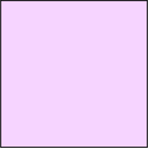 s = 0 | k=2 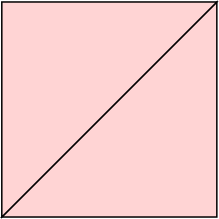 s = 1 |
| k=4 s = 0 | k=5 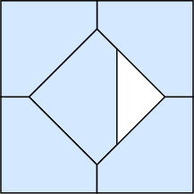 s = 1/√2 = .707+ | k=6 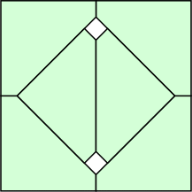 s = 2√2–2 = .828+ | k=8 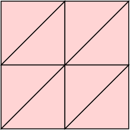 s = 1 |
| k=9 s = 0 | k=10 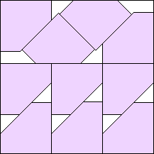 s = (15√2–4)/28 = .614+ Maurizio Morandi | k=11 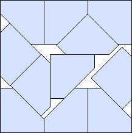 s = (24√2–18)/23 = .693+ Maurizio Morandi | k=12 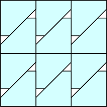 s = 3/4 = .750 |
| k=13 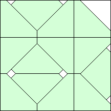 s = 2√2–2 = .828+ Maurizio Morandi | k=14 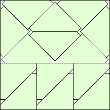 s = (19–11√2)/4 = .860+ Maurizio Morandi | k=15 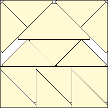 s = (11√2–10)/6 = .926+ Maurizio Morandi | k=16 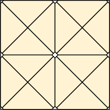 s = (8–3√2)/4 = .939+ |
| k=18 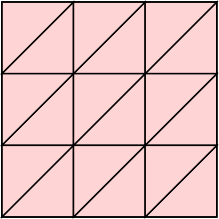 s = 1 |
| k=16 s = 0 | k=17 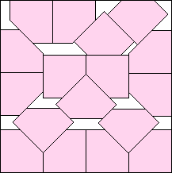 s = (33√2–28)/34 = .549+ Maurizio Morandi | k=18 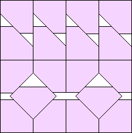 s = (1+√2)/4 = .603+ Maurizio Morandi | k=19 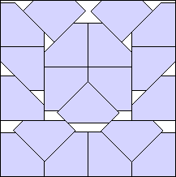 s = (73√2–44)/89 = .665+ Maurizio Morandi |
| k=20 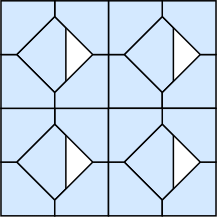 s = 1/√2 = .707+ | k=21 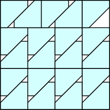 s = 3/4 = .750 | k=22 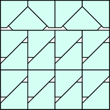 s = (4+√2)/7 = .773+ | k=24 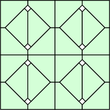 s = 2√2–2 = .828+ |
| k=26 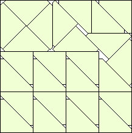 s = (24√2–9)/28 = .890+ Maurizio Morandi | k=28 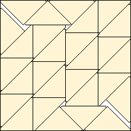 s = (17+79√2)/137 = .939+ Maurizio Morandi | k=30 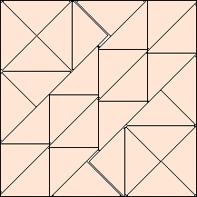 s = (90√2–105)/23 = .968+ Maurizio Morandi | k=32 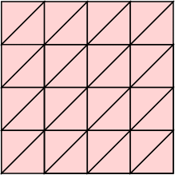 s = 1 |
If you can extend any of these results, please e-mail me. Click here to go back to Math Magic. Last updated 9/19/17.